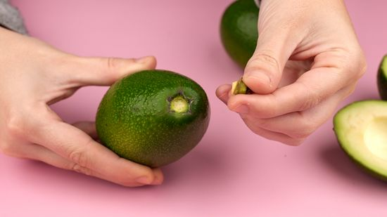
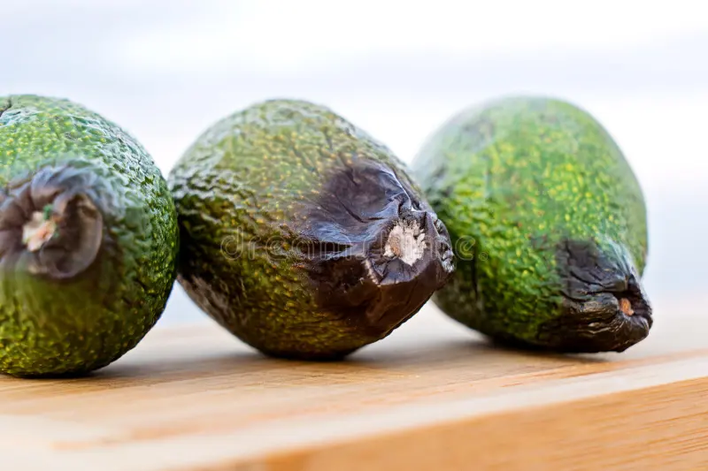

Lightly poke it with finger from various sides. If you can easily push your finger into it, then it is overripe and should be
removed from inventory.
If you can see that it has turned from green to very dark brown, that is an indication that it is ripe and will start going bad soon.
Ready to eat avocado was not ripe enough, and could not be eaten same day after purchase (supply issue).